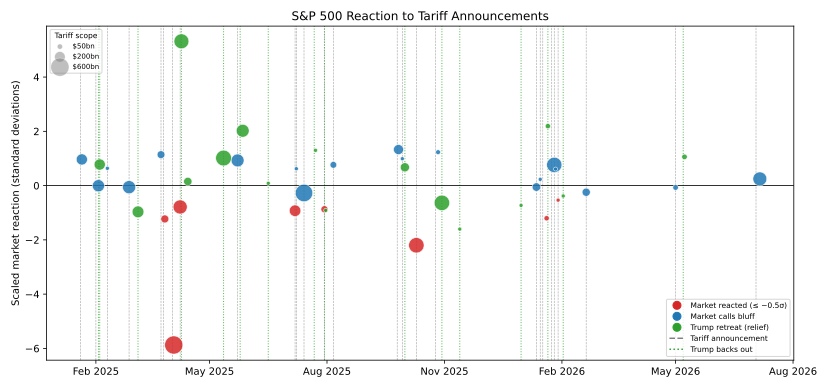

America celebrated its 250th birthday with fireworks, parades and a cage fight on the White House lawn. Markets, for their part, marked the occasion the only way they know how: by putting a price on the birthday girl. It is a generous valuation, given what investors have had to work with.
Average tariffs are at their highest level since the 1930s, with consumers expected to bear much of the cost. Inflation remains stubborn, and investors continue to debate the path of interest rates. Even the conflict with Iran, perhaps the most persistent of President Trump's problems, has failed to rain on the parade. Against all this, the S&P 500 sits at a record, up almost 10% this year and 30% since the 2024 election.
While commentators were quick to pick up the 'TACO' (Trump Always Chickens Out) trade, they often forget to mention it has been a two-way game of chicken since Liberation Day. Markets have repeatedly bet on the White House to chicken out before earnings stall, and this hasn't always worked in their favour. Each time, though, they have been bailed out by the massive rise in capital expenditure as the AI race heats up. Earnings grew 28% last quarter, while Google, Amazon, Microsoft and Meta are preparing to spend $725bn between them this year on data centres and chips.
Ironically, as investors' indifference has hardened, the White House has gained more courage to pursue its renovation of America's institutions and relations. So far, both markets and the White House are accelerating, and both are being proved right.
The clearest dissent comes from the dollar, which has lost nearly a tenth of its value since January 2025. With the deficit running above 6% of GDP in peacetime, foreign investors seem less sure that American exceptionalism can carry the same premium forever.
